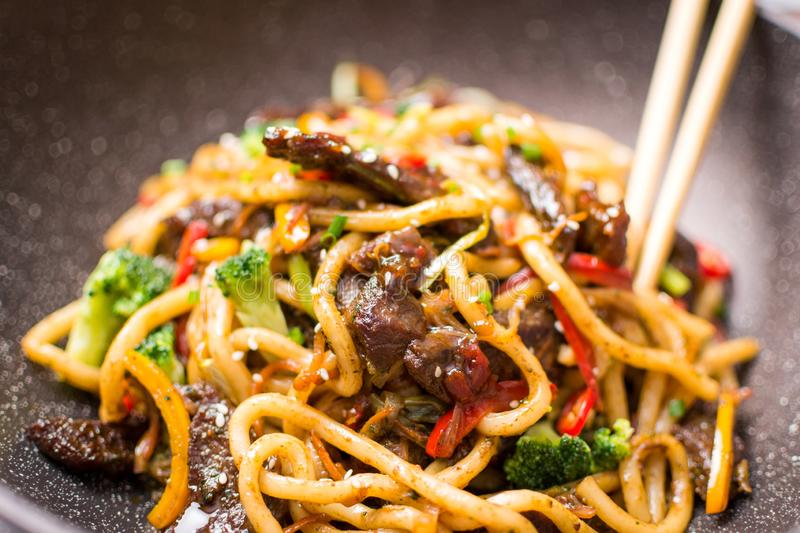

Stir Fried Udon

Simple with a lot of flavour
A stir fried noodle dish that packs a lot of punch with its resourcefullness
A dish that you can cater to your own wants in a dish
Ingredients
- Udon Noodle Package
- Cooking Oil
- Seaweed
- Cornstarch
- Minced Garlic
- Green onions
- Soy Sauce
- Rice Wine
- White Sugar
- Sesame Oil
- Any types of Meat
Recipe Instructions
- Bring a large pot of lightly salted water to a boil. Cook udon in boiling water, stirring occasionally,
until noodles are tender yet firm to the bite, 10 to 12 minutes. Drain and set aside.
- While noodles are cooking, blend vegetable oil, cornstarch, garlic, and ginger together in a large bowl
until cornstarch is dissolved. Mix in frozen vegetables, tossing to lightly coat.
- Whisk soy sauce, water, vinegar, and sugar together in a small bowl.
- Heat sesame oil in a wok over medium-high heat. Cook and stir pork strips in the hot oil until just browned,
5 to 7 minutes. Add frozen vegetables and cook, stirring constantly to prevent burning, about 2 minutes. Stir in
soy sauce mixture. Add drained udon and stir-fry until vegetables are tender and pork strips are no longer pink in the centers, about 2 minutes more.